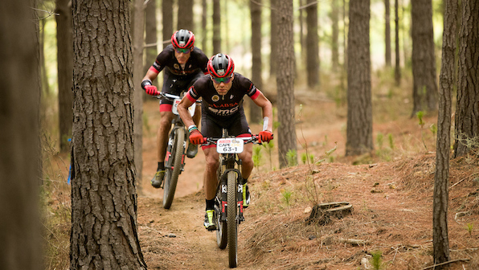
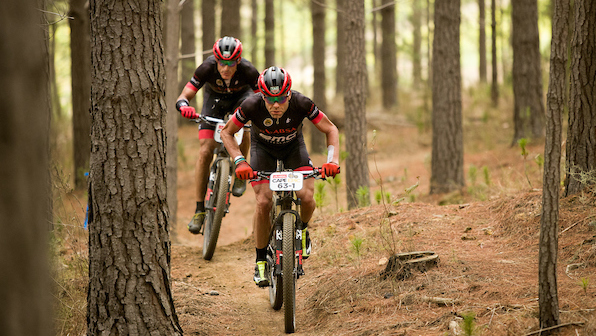

Premier cycling and scooter rental service, providing thrilling adventures and eco-friendly transportation options in Wellington.
 

We are a dynamic team brought together by a shared passion for cycling and a vision to provide exceptional rental services in the Wellington region. Founded by Wei Zhang, a mountain bike enthusiast, and Tory Kairua, an e-commerce expert, our purpose is to enable individuals to explore the beautiful landscapes of Wellington through our diverse range of bikes and scooters. We prioritize safety and offer high-quality equipment, including electric, mountain, and road bikes, as well as e-scooters and monster scooters. With strategically placed bicycle racks near popular cycling destinations, such as Ma̅kara mountain bike park, Hutt river valley, and the Wellington harbour front, we aim to promote active and sustainable lifestyles while fostering a sense of adventure and camaraderie among our customers. Our company values integrity, customer satisfaction, and environmental stewardship, reflecting our commitment to providing reliable and eco-friendly transportation options to the community.
Biking at Ma̅kara Peak is an exhilarating experience, blending fun and fitness amidst stunning vistas. The challenging trails offer an excellent workout, while the panoramic views of Wellington's captivating landscapes make every pedal worth it. Whether you're a seasoned rider or a beginner seeking adventure, Makara Peak promises an unforgettable biking escapade.
Check out the official Ma̅kara Peak website for more information:
https://makarapeak.bike